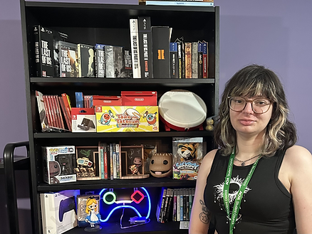

Loretta Lok
Producer & Game Designer — a development strategy for post-graduation employment in the games industry

Agenda
Converting a group's energy into one complete and polished thing
Across three team productions — Doggo Detective, Little Pig, and Sinner's Belt — the part of the job I kept returning to was getting six to twenty people rowing in the same direction: writing the design document, running the scrum, cutting scope so the game we shipped was smaller but finished.
On my solo projects — Bast and Scran Dash — I get the other half: originating the concept myself and defending a single creative vision from pitch to playtest.


Ten years of casework taught me how to keep people moving toward a deadline they don't control
Before games, I represented clients and managed casework at organisations including Chambers and Partners and the Free Representation Unit — work built entirely around fixed deadlines, incomplete information, and other people's competing priorities.
Game production asks for exactly that skill set: schedules, scope discipline, and the judgement to arbitrate when two contributors disagree.
Producing let me keep the parts of legal work I was good at while moving into a creative industry I actually wanted to build things in.
Associate Producer at a small-to-mid studio
Industry sources describe the Associate Producer as the entry rung into production: most studios want a relevant degree and value QA experience as a common pivot point, with strong organisational skills weighed above years worked.
I'm targeting studios small enough that I can also keep contributing design work directly — closer to the co-lead role I held on Little Pig than a pure scheduling function.
Evidence from three productions, not a claim about myself

Appointed Lead Designer on a 20-person, two-campus AAA capstone.

Downscoped Little Pig from three rooms to two mid-production.

Arbitrated an art-pipeline dispute on Sinner's Belt and a workload issue on Little Pig.

Rewrote Doggo Detective's tutorial after testers missed the core puzzle.
Across Associate Producer and Producer listings, three requirements repeat
Familiarity with tools like Jira and Trello and a working knowledge of Agile/Scrum shows up as a baseline requirement, not a differentiator.
Producers are expected to understand each discipline's work well enough to give feedback and mediate.
Listings consistently name written and verbal communication skill above any specific software.
Three shifts affecting how I should present myself
AI is increasingly used for prototyping and asset generation industry-wide — I used it this way on Bast, treating outputs as placeholder raw material rather than final content.
Hiring managers increasingly favour a small number of complete, playable projects over a long list of unfinished ones.
Accessibility is moving from a late-stage patch to a blueprint-stage requirement — I built colour-independent cues into Doggo Detective after playtesting.
One line from a working producer's writing has stuck with me
"You must play your game. Regularly. Throughout production, from the earliest prototype through to live operations."
— The Production Alchemist, on the Associate Producer to Lead Producer career path
This matches what I found running QA on Doggo Detective and Little Pig myself rather than delegating it entirely.

My production experience covers schedule and scope, but not real budget ownership or monetisation strategy.
I've used Trello and Codecks, but not Jira, named more often at larger studios.
My contacts are almost entirely coursemates and academic mentors — no working relationships inside a studio yet.
My largest team was 20 people over 10 weeks, academic and unpaid — studio stakes run higher and longer.

Continue shipping self-initiated work (Bast, Scran Dash) to keep design muscles active and build production-scale range.
Complete a short Jira/Agile certification and a games-industry budgeting course before graduation.
Attend at least one conference or meetup per term and build a LinkedIn presence matching the portfolio's framing.
Keep the CV and portfolio website updated together after every project ships.
Studios favour playable demos and evidence of process over screenshots and claims.
Adopting: every project links to a playable itch.io build and its full devlog.
Quality over quantity is the current hiring standard, over a long list of unfinished work.
Adopting: five complete case studies with real production detail.
Portfolios read best when one specialisation leads and secondary skills support it.
Adopting: separate Production and Design portfolio pages.
A warm, restrained palette over a games-industry cliché
Most game-dev portfolios default to dark mode with neon accents. I chose the opposite: a warm cream ground with sage green and desert gold, drawn from my own watercolour work and Georgia O'Keeffe's palette — restrained and closer to a working artist's site than a marketing page for a game.
The same two accent colours and one serif/sans type pairing (Lora and Work Sans) repeat across all nine pages, so the site reads as one coherent body of work.

A fixed sidebar so the site never asks a visitor to hunt for a page
A persistent left sidebar carries Home, Production, Design, CV and Devlog on every page, with each section nested underneath its heading on hover — so a recruiter with ten seconds to spend can jump straight to a case study.
Splitting Production from Design was a direct response to the "clear specialisation" finding — team productions in one portfolio, self-initiated solo work in the other.
Every case study leads with production evidence, not gameplay description

Every case study states team size, timeline, and any scope cut made and why.

Weekly devlogs stay in my own voice, organised as a hub linking each production's page.

The CV page follows the layout of my working CV document directly.